Личная ответственность: как наши привычки влияют на климат
Вклад разных людей в изменение климата неодинаков. По данным Международного института прикладного системного анализа, около 10% самых богатых людей мира ответственны почти за половину глобального потепления с 1990 года. Это связано с их высоким уровнем потребления и образом жизни. Исследователи подсчитали, что каждый из 1% богатейших людей планеты, в основном из США и Китая, повлиял на потепление в 26 раз больше, чем средний житель Земли.
Каждый наш день — это выбор. Как мы добираемся до работы, сколько тратим электричества, какую еду и товары покупаем — всё это напрямую влияет на объём выбросов парниковых газов. Совокупность этих выбросов называют углеродным следом.
Углеродный след
Углеродный след — это общее количество парниковых газов, которые прямо или косвенно создаёт человек, организация или продукт.
Парниковых газов много, и все они по-разному влияют на климат, задерживая тепловое излучение Земли. Чтобы упростить расчёты, их воздействие приводят к общему знаменателю — эквиваленту диоксида углерода (CO₂). Эта условная единица позволяет удобно считать и сравнивать общий объём выбросов.
Углеродный след есть у каждого человека — у жителя бедной Бурунди он совсем небольшой и колеблется на уровне 1 тонны СО₂-экв. в год. Средний углеродный след жителя США превышает 16,5 тонн СО₂-экв. Для разных городов России данная величина будет весьма сильно колебаться, достигая максимальных значений там, где уровень жизни населения наиболее высок, при этом имеется долгая холодная зима, а источником тепловой и электрической энергии служат ТЭЦ, работающие на угле.
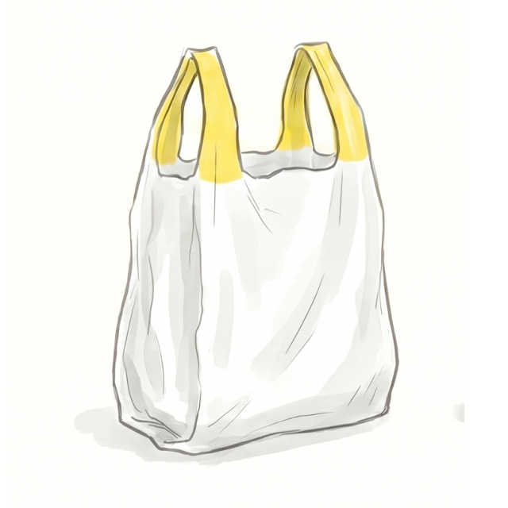
Полиэтиленовый пакет 33 грамма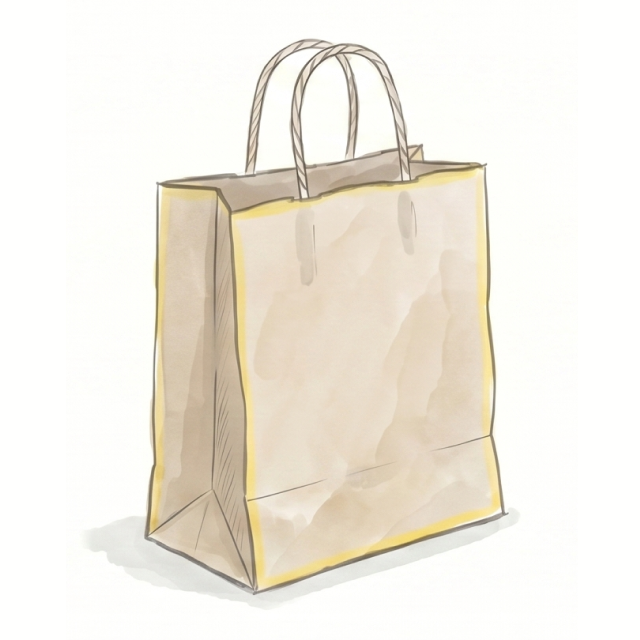
Бумажный пакет 40–80 грамм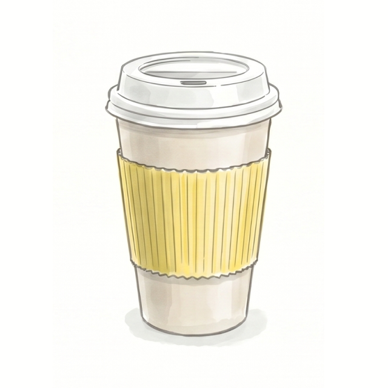
Чашка кофе 570 грамм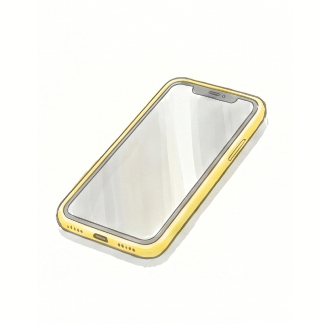
Смартфон (час ежедневно) 1 250 грамм за год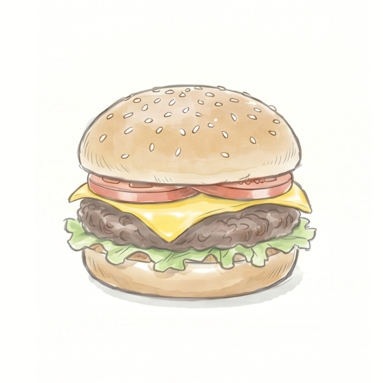
Бургер (с говядиной) 5 000 граммГрамм — это эквивалент CO2. Источник: «Экосфера», 2020
Любое наше действие оставляет углеродный след. Главная задача — обращать внимание на то, сколько и каких ресурсов мы расходуем. Вы можете оценить свой личный след с помощью онлайн-инструментов.
Например, на сайте Carbon Footprint можно узнать, сколько выбросов создаёт ваше домохозяйство.
Если вы часто путешествуете — можете посчитать углеродный след ваших поездок. Существуют специальные инструменты, например, калькулятор ИКАО (Международной организации гражданской авиации), Аэрофлота и сервисы, как на Авиасейлс, которые помогут рассчитать количество выбросов CO₂ от авиаперелётов и других видов транспорта.
Наведите курсор на карточку
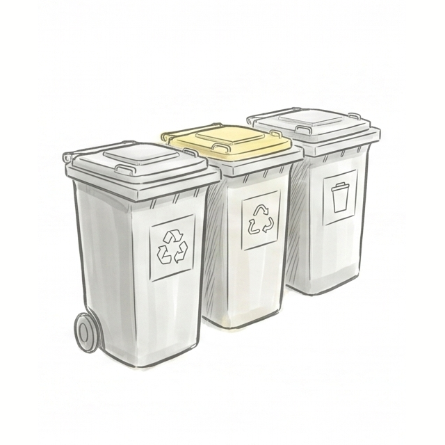
Раздельный сбор отходовРаздельный сбор минимизирует полигонное захоронение органики, предотвращая эмиссию метана, и сокращает энергозатраты за счет возврата вторичных ресурсов в производственный цикл.
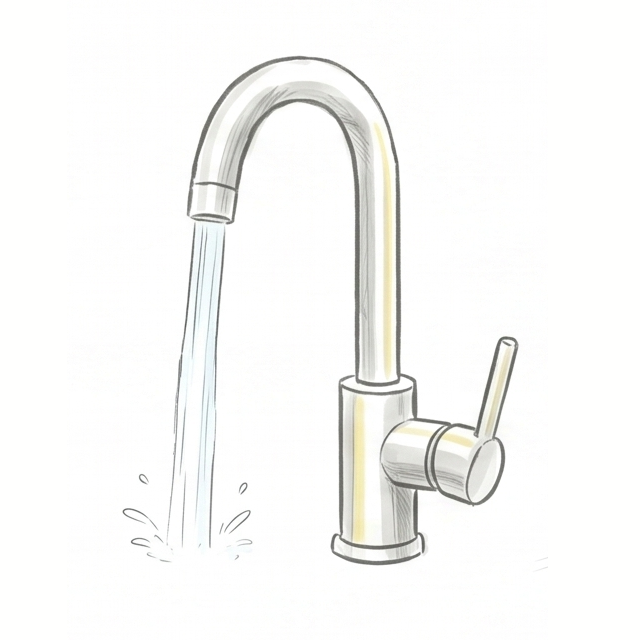
Рациональное использование пищевых ресурсовОптимизация потребления минимизирует избыточное производство, исключая неоправданную эмиссию парниковых газов на всех этапах жизненного цикла продукции — от интенсивного земледелия и переработки до транспортировки и энергоемкого хранения.
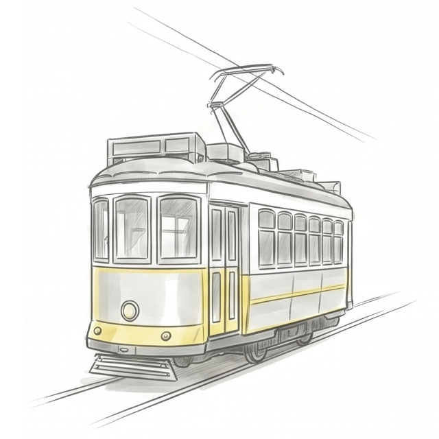
Переход на более экологичный транспортПереход на низкоуглеродные виды транспорта обеспечивает прямое сокращение удельных выбросов парниковых газов за счет замещения двигателей внутреннего сгорания на энергоэффективные системы с нулевым или минимальным уровнем прямой эмиссии.
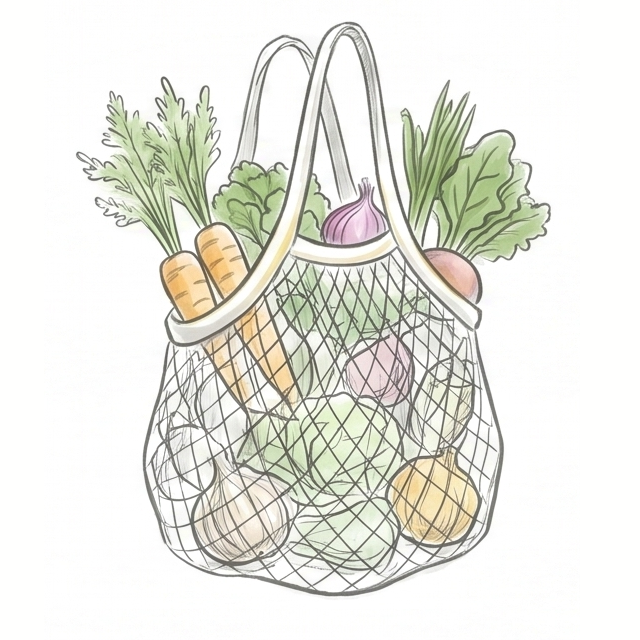
Отказ от одноразовых изделийЗамещение одноразовых изделий многоразовыми альтернативами снижает совокупную углеродоемкость потребления за счет исключения эмиссий от постоянной добыче сырья, производстве и последующей утилизации товаров с коротким жизненным циклом.
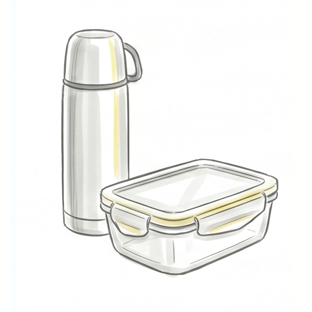
Энергоэффективность домаОптимизация бытового энергопотребления позволяет радикально сократить удельный расход энергоресурсов и минимизировать связанные с их генерацией косвенные выбросы парниковых газов в рамках повседневной жизнедеятельности.
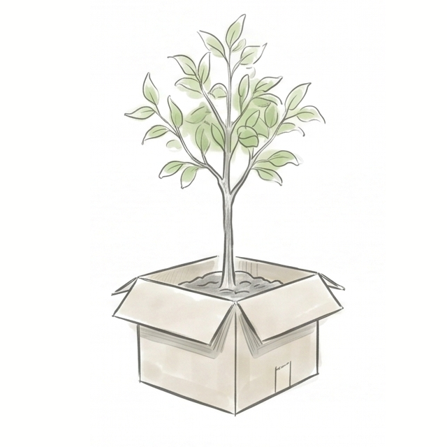
Цифровая гигиенаСистематическая очистка цифровых хранилищ и оптимизация объемов передаваемого трафика позволяют снизить нагрузку на серверную инфраструктуру и дата-центры, сокращая тем самым энергопотребление и углеродный след, связанный с эксплуатацией и охлаждением вычислительных мощностей.
Даже косвенные действия — например, поддержка локальных брендов и выбор ответственных сервисов — формируют запрос на низкоуглеродное будущее. В результате каждое повседневное решение становится реальным вкладом в снижение глобальных выбросов.
Роль образования: как знания помогают бороться с проблемой
Качественное образование — один из главных инструментов в борьбе с изменением климата. Исследования показывают, что климатическая грамотность напрямую влияет на поведение людей и их готовность действовать: снижать выбросы и адаптироваться к новым условиям.
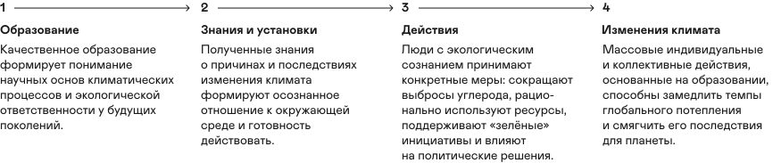
Качественное образование формирует понимание научных основ климатических процессов и экологической ответственности у будущих поколений.
Полученные знания о причинах и последствиях изменения климата формируют осознанное отношение к окружающей среде и готовность действовать.
Люди с экологическим сознанием принимают конкретные меры: сокращают выбросы углерода, рационально используют ресурсы, поддерживают «зелёные» инициативы и влияют на политические решения.
Массовые индивидуальные и коллективные действия, основанные на образовании, способны замедлить темпы глобального потепления и смягчить его последствия для планеты.
Спрос на профессионалов в области климата стремительно растёт. Всё больше компаний создают у себя целые отделы, которые занимаются этими вопросами. Менеджерам требуются новые знания для управления климатическими рисками, а инженерам — умение работать с современными экологичными технологиями. Чтобы и бизнес, и общество могли успешно адаптироваться к новым реалиям, им нужны актуальные и достоверные знания.
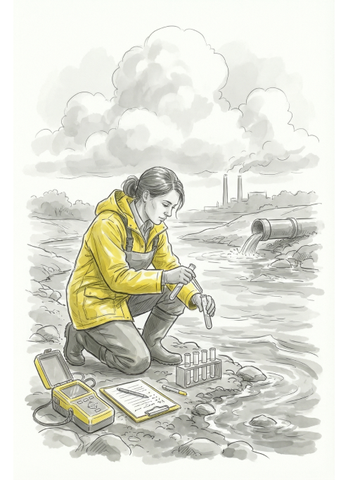
Проведение исследований по оценке влияния антропогенной деятельности на экосистемы
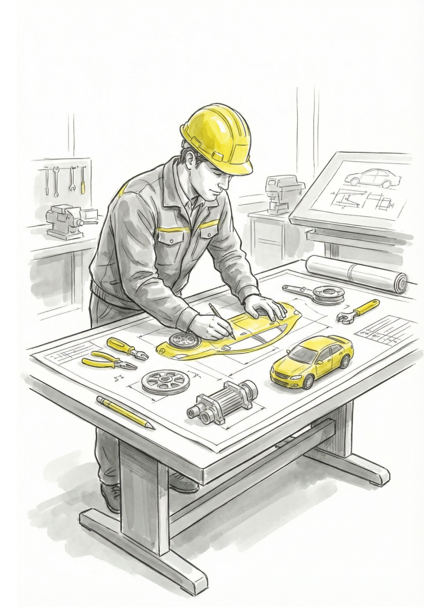
Разработка и внедрение технологий по созданию экологичных автомобилей
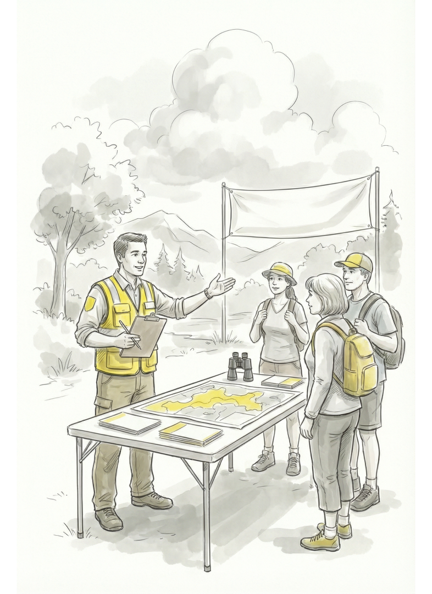
Создание информационных кампаний, направленных на повышение экологической осведомлённости
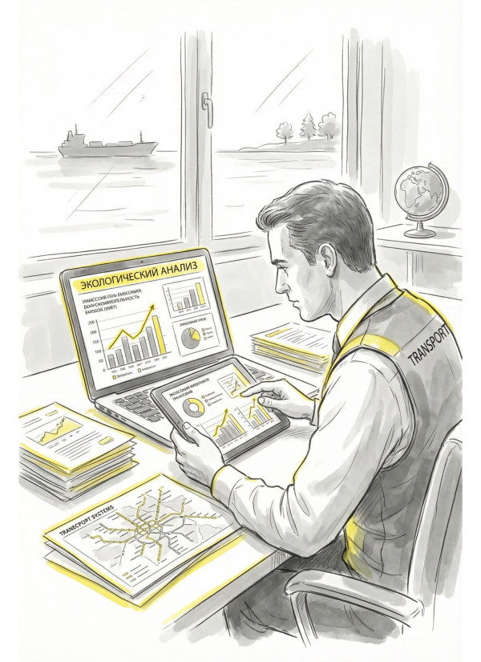
Анализ влияния производства тканей на окружающую среду и разработка мер по его снижению
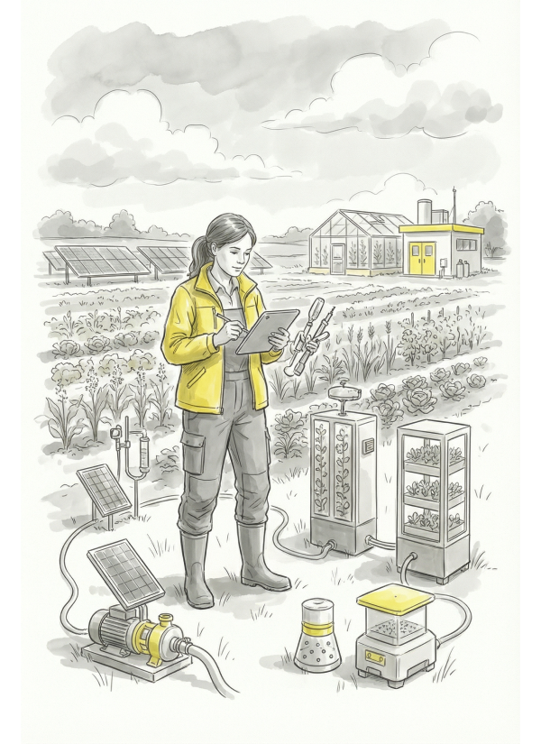
Разработка и внедрение экологически чистых технологий сельскохозяйственного производства

Анализ экологического воздействия и разработка мер по снижению выбросов

Организация мероприятий по повышению экологической грамотности туристов
Климатическая справедливость — обеспечение справедливого перехода, который открывает социальную и экономическую трансформацию при устранении коренных причин изменения климата.
Образование для устойчивого развития: мировой подход
Борьба с изменением климата — один из ключевых приоритетов глобальной программы ЮНЕСКО «Образование в интересах устойчивого развития» (ОУР) до 2030 года. Её цель — не просто давать теорию, а помогать людям делать мир более устойчивым через практические действия. В центре внимания — глобальные проблемы вроде изменения климата или социальной справедливости и то, как наши личные действия с ними связаны.
Чтобы образование стало важной частью международного ответа на климатический кризис, ЮНЕСКО создало Партнёрство по экологизации образования. К нему присоединились более 80 стран и 1 300 организаций, включая структуры ООН, общественные движения и частный сектор.
Наведите курсор на карточку
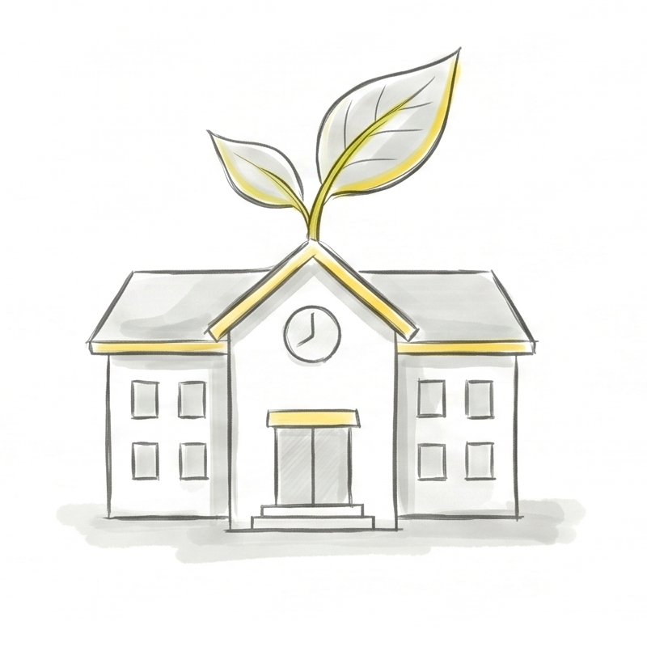
Делать учебные заведения «зелёными»Школы, колледжи и университеты могут получить специальную аккредитацию, если внедряют у себя экологичные практики.
Темы экологии и климата интегрируют в разные предметы, чтобы студенты понимали их важность для своей будущей профессии.
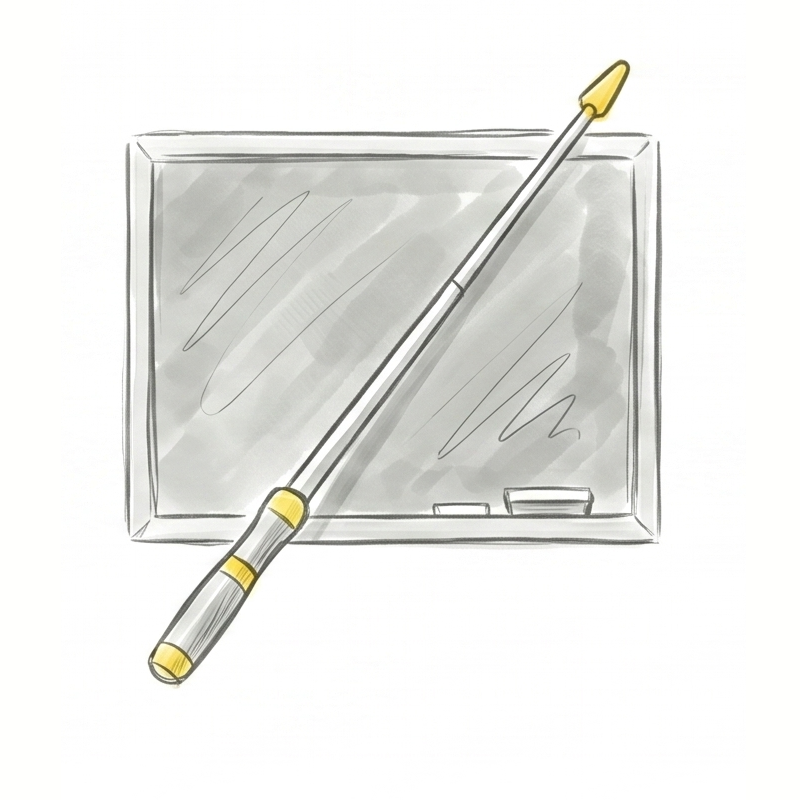
Готовить преподавателейУчителей обучают современным методикам, чтобы они могли эффективно рассказывать об изменении климата и вовлекать учеников в практические проекты.
Климатическое образование делают доступным для всех через общественные центры и онлайн-курсы, чтобы учиться могли люди любого возраста.
Недавний доклад ЮНЕСКО показал, что часто образование уделяет слишком много внимания теории, но не мотивирует учеников к действиям. Чтобы это исправить, ЮНЕСКО предлагает два практических инструмента:
Руководство по экологизации учебных программ — это пособие помогает понять, что именно должно включать в себя климатическое образование и как интегрировать экологические темы в уроки для разных возрастов — от 5 до 18 лет и старше.
Стандарт качества для экологичной школы устанавливает минимальные требования для учебного заведения, которое хочет стать экологичным. Стандарт рекомендует создавать комитеты по экологии с участием учеников и родителей, проводить аудит потребления энергии и воды, а также налаживать связи с местными сообществами для решения локальных проблем.
Как оценивают прогресс в климатическом образовании
В 2024 году в докладе Рамочной конвенции ООН об изменении климата (РКИК ООН) ещё раз подчеркнули, что без просвещения, подготовки кадров и участия общества невозможно достичь целей Парижского соглашения. Все эти направления объединили в одну концепцию РПВК, или «Действия по расширению прав и возможностей для борьбы с изменением климата».
Чтобы понять, насколько страны успешны в этой работе, был создан специальный проект «Мониторинг и оценка коммуникации и образования по вопросам климата» (МОКОВК). Вот основные направления работы проекта:
Наведите курсор на карточку
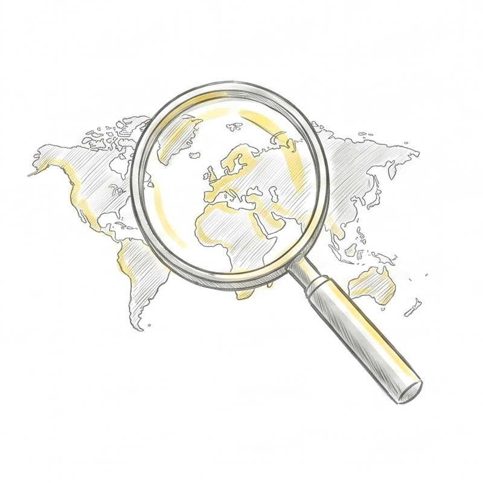
Анализ данныхПроект собирает и визуализирует данные о состоянии климатического образования в разных странах, что позволяет сравнивать их прогресс.
Для каждого государства создаётся подробный профиль, где указана информация о законах, бюджетах и программах в сфере климатического образования.
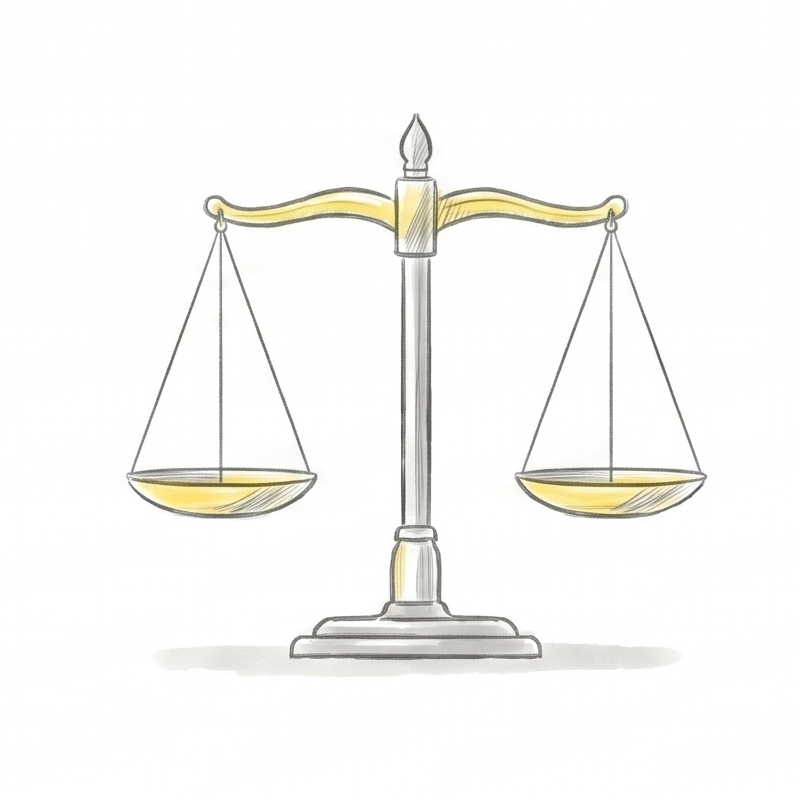
Сравнительный анализМОКОВК помогает странам видеть свой прогресс в достижении Целей устойчивого развития (ЦУР).
Совместная работа помогает создавать новые учебные материалы и поддерживать политику в этой области.
Для анализа всех этих данных на платформе МОКОВК есть интерактивные инструменты. Они помогают изучать показатели, связанные с качеством климатического образования и коммуникации по всему миру.
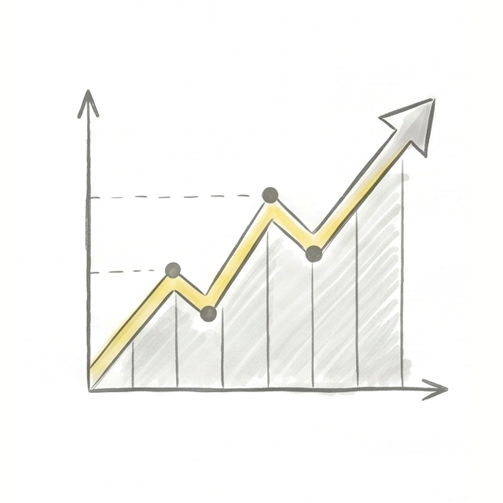
Климатические условия в стране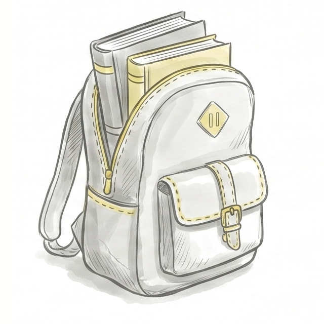
Климатическое образование в школах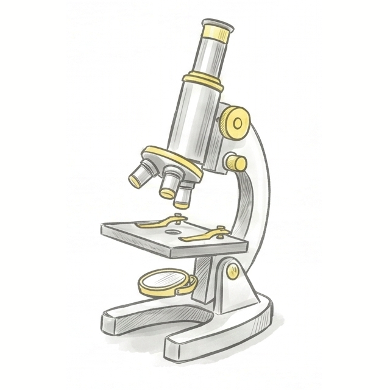
Программы в высшем образовании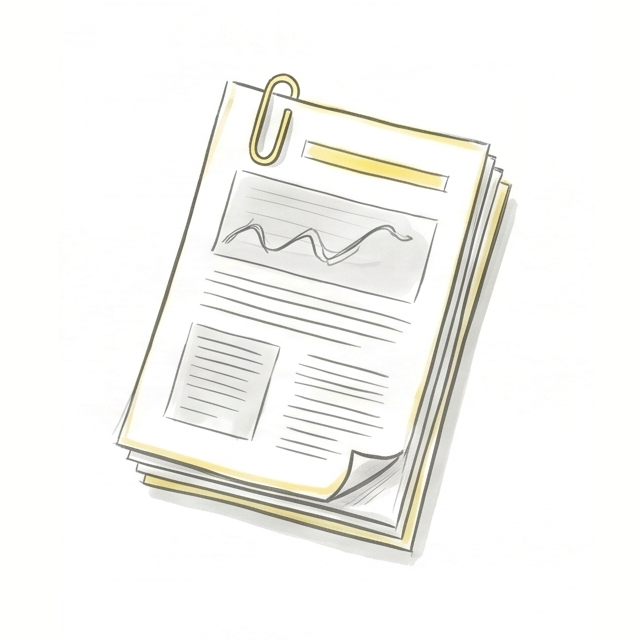
Мониторинг и отчётностьКлиматическое образование и «зелёные» профессии в России
В России образование и просвещение также признаны ключевыми элементами климатической политики. Это закреплено в Климатической доктрине страны.
Что делает государство, чтобы готовить квалифицированные кадры:
- готовит научных сотрудников высшей квалификации,
- организует обучение студентов старших курсов на базе ведущих научных организаций,
- отправляет одарённых молодых учёных и студентов на стажировки в мировые научные центры,
- готовит дипломатов и консультантов для ведения международных переговоров по климату.
Образование — это первый шаг. Следующий — выбор профессии, которая поможет внести реальный вклад в решение экологических проблем.
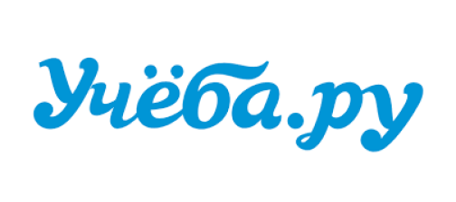
Учёба.ру
Расскажет, чем занимаются климатологи, и предложит более 150 вузов по всей стране, где можно получить эту специальность.
Перейти →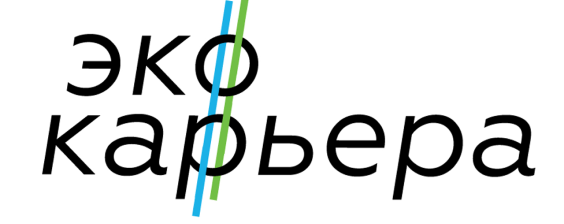
Лаборатория ЭкоКарьеры
Социальный проект для развития карьеры в «зелёной» сфере, поиска работы и знакомства с работодателями.
Перейти →Гайд по карьере в сфере охраны климата
Поможет разобраться, как начать карьеру в экологии и устойчивом развитии.
Перейти →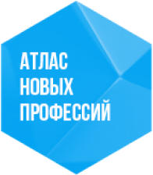
Атлас новых профессий
Альманах перспективных отраслей и профессий на 15–20 лет.
Перейти →В России уже разработаны и утверждены профессиональные стандарты для специалистов в области климата. Этот факт говорит о серьёзном подходе бизнеса и государства — это делает рынок труда более прозрачным и повышает качество подготовки выпускников.
Вы прошли весь путь: от научных основ климата до личных действий. Теперь вы видите, что изменение климата — это сложная система вызовов, которые затрагивают природу, экономику и политику.
Решение этой глобальной задачи зависит от действий на всех уровнях — от правительств до каждого из нас. Знания — первый шаг к переменам. Надеемся, наш проект помог вам его сделать.